- About the author
- Questions and Issues
- Edit and Contribute
- -- Part 1 导言
- 1. -- 数字化出版过程
- 2. 角色定义
- 3. -- 活动组织方
-
4.
-- 挑战方前期准备 -> [挑战方]
- 4.1. 本章导引
- 4.2. 挑战方前期准备工作的内容
- 4.3. 挑战方前期准备工作指南
- 4.4. 人员筛选方法小技巧
- 4.5. 人才专长挖掘和分类的手段
- 4.6. 挑战方工作文件
- 4.7. 挑战方任务分工
- 4.8. 故事设计
- 4.9. 主题确定
- 4.10. 选定任务
- 4.11. 故事板设计方法
- 4.12. 测试与故事发布
- 4.13. 挑战方工作规则
- 4.14. 以合约的方式描述工作内容
- 4.15. 计分组
- 4.16. 统一文件标准
- 4.17. 进度及数据管理工具
- 4.18. 项目进度管理
- 4.19. 进度及数据管理工具
- 4.20. 不同风格的任务规划
- 4.21. 财务管理
- 4.22. 任务规划与派发
- 5. 现场执行 -> 任务方
- 6. --活动成果展示
- 7. 案例库
- 8. --工具
- 9. --方法
- 10. 附录
- Generated using GitBook
Git
什么是版本控制
版本控制是一种记录一个或若干文件内容变化，以便将来查阅特定版本修订情况的系统。在本书所展示的例子中，我们仅对保存着软件源代码的文本文件作版本控制管理，但实际上，你可以对任何类型的文件进行版本控制
版本控制系统 Git 的特点
同生活中的许多伟大事件一样，Git 诞生于一个极富纷争大举创新的年代。Linux 内核开源项目有着为数众广的参与者。绝大多数的 Linux 内核维护工作都花在了提交补丁和保存归档的繁琐事务上（1991－2002年间）。到 2002 年，整个项目组开始启用分布式版本控制系统 BitKeeper 来管理和维护代码。
到了 2005 年，开发 BitKeeper 的商业公司同 Linux 内核开源社区的合作关系结束，他们收回了免费使用 BitKeeper 的权力。这就迫使 Linux 开源社区（特别是 Linux 的缔造者 Linus Torvalds ）不得不吸取教训，只有开发一套属于自己的版本控制系统才不至于重蹈覆辙。他们对新的系统制订了若干目标：
- 速度
- 简单的设计
- 对非线性开发模式的强力支持（允许上千个并行开发的分支）
- 完全分布式
- 有能力高效管理类似 Linux 内核一样的超大规模项目（速度和数据量）
自诞生于 2005 年以来，Git 日臻成熟完善，在高度易用的同时，仍然保留着初期设定的目标。它的速度飞快，极其适合管理大项目，它还有着令人难以置信的非线性分支管理系统，可以应付各种复杂的项目开发需求。
使用 Git 前的基本配置
注册 GitCafe 账号
什么是 GitCafe GitCafe 是一个基于代码托管服务打造的技术协作与分享平台，这次您将使用 GitCafe 托管 XLP 手册的内容，向全世界展示您令人惊叹的成果。- 安装 Git
- Widnows 和 Mac 用户请在 XLP 共享网盘中的 Git 文件夹中下载安装 Git
- Linux 用户请使用发行版本自带的包管理工具安装
Git 中设置用户基本信息（您的用户名和邮箱会出现在您的每个提交信息当中，方便识别与记分）
启动终端，键入以下命令配置基本信息 git config --global user.name "您的 GitCafe 的用户名" git config --global user.email 您的GitCafe 的注册邮箱 注：Windows 用户在任意目录点击右键选择 “git bash”启动终端，Mac OS X 和 Linux 用户启动终端创建 SSH Key 用户身份验证
在终端中键入 ssh-keygen -t rsa -C "您的 GitCafe 注册邮箱" 执行命令后会先询问 key 的保存路径，使用默认值（直接回车），之后要求您为 key 设置密码，输入密码后回车（注意输入密码时，屏幕不会显示，输入完成回车即可），命令成功执行后，再执行 cat ~/.ssh/id_rsa.pub 即可获得 SSH Key（Windows 系统中若无法复制，可到对应保存地址找到 SSH 文件，以记事本格式打开。）在 GitCafe 中添加身份验证
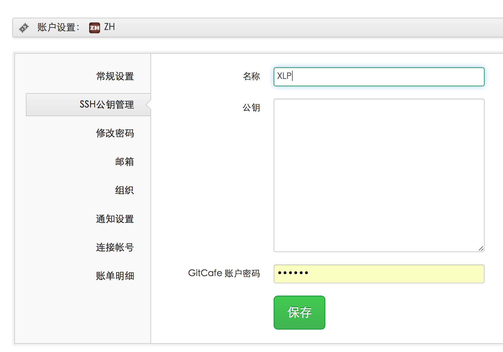
确保您已登录 GitCafe，打开 SSH 公钥管理页面 https://gitcafe.com/account/public_keys 选择“添加新的工钥”，为次公钥起名（比如 XLP），粘入 SSH Key ，并输入注册密码，点击保存即可。
注：
1. 您可以用下面格式获取 Git 帮助：git help 命令
2. 访问 http://git-scm.com/book/zh/ 获取详细教程
3. 使用搜索引擎搜索问题答案
4. 求助现场工作人员（收费）
Git 基础使用
阅读本章后您将掌握 Git 基本且常用的命令。您将可以初始化代码仓库；对文件进行跟踪和取消跟踪，暂存和提交更新；查看提交历史及它们之间的差异；以及从远端仓库拉取数据和向远端仓库推送数据。
获取 Git 仓库
我们可以通过将现有目录导入 Git 仓库和从已有 Git 仓库克隆一份镜像两种方式获取 Git 仓库。
在现有目录下初始化 Git 仓库
将目录变为 Git 仓库非常简单，只需要在目录中执行以下命令初始化即可：
git init
初始化后，Git 将在目录中创建名为 .git 的目录来存放 Git 进行版本控制所需的所有文件。
接下来我们需要使用 add 命令将文件纳入 Git 管理进行版本控制
git add README.md //将 README.md 纳入 Git 管理
git add . //当前目录下的所有文件纳入 Git 管理
从现有的仓库克隆
若您需要从现有仓库克隆一份镜像，只需要使用下列命令即可将该项目从项目地址克隆出一份 Git 仓库。
git clone 仓库地址
提交与推送
接下来，我们将对一些文件进行修改并将此次更新提交到仓库。
文件状态
在 Git 仓库目录下的文件具有“已跟踪”和“未跟踪”两种状态。已跟踪的文件是指文件已被纳入版本控制，在您对项目文件进行更新后，它们可能呈现为未更新（相对上一版本没变化），已修改（相对上一版本有变化）或者已放入暂存区（相对上一版本有变化且待提交）。而未跟踪文件，Git 并不会记录它们的变化。
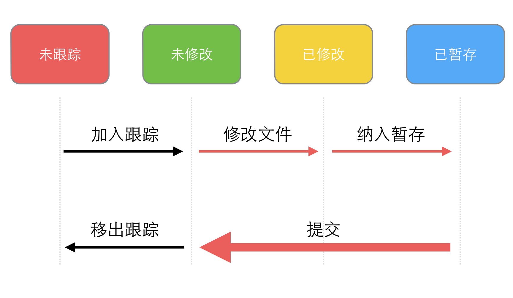
提交
Git 中使用 commit 命令进行更新的提交，commit 命令将处于暂存区中的文件打包作为一次更新进行提交。
git commit -m "提交信息"
实战
接下来配合查看文件的状态 git status 命令进行实战
首先创建一个名为 git_test 的空文件夹，其目录中运行 git init 初始化 Git 仓库。加入一个空文件 README.md，这时查看 Git 文件状态会得到如下结果：
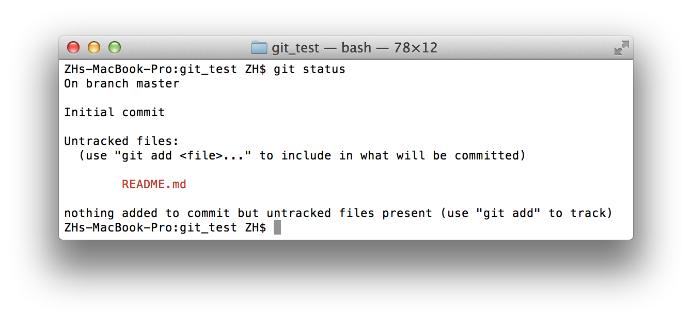
表明 README.md 处于未跟踪状态，未跟踪的文件意味着 Git 在之前的提交中没有这些文件，接下来使用 add 命令将其纳入跟踪
git add README.md
再来查看文件状态，README 位于暂存状态，待提交，若现在进行提交，那么该文件当前版本将被保存在 Git 提交历史记录中。
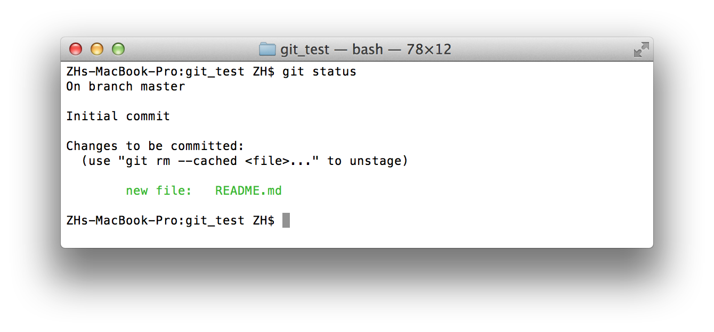
接下来在对 README.md 进行修改，查看文件状态
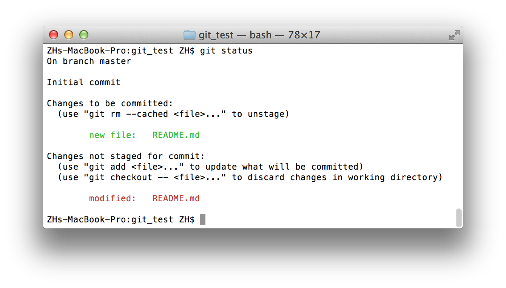
README.md 这是同时具有了已暂存和已修改两个状态，这是怎么回事？当您运行 git add 的时候，实际上是讲当时的文件版本放入了暂存区，当您再次修改文件时，Git 探测到相对于暂存区您又做出了修改，于是 README.md 又具有了“已修改“”状态。这时工作目录中 README.md 为已修改版本，暂存区中是您用 add 命令纳入暂存区时的版本。
最后运行 add 命令将最终版本的 README.md 加入暂存区并提交
git add README.md
git commit -m "update README.md"
最后，使用 log 命令查看提交历史
git log
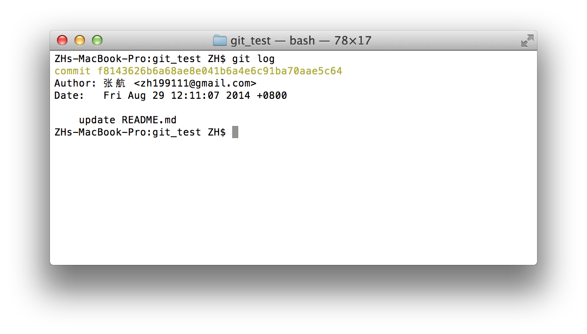
推送
有时，我们需要将本地的 Git 仓库推送到远程仓库，这时需要加入远端仓库的地址
git remote add repo_name(比如 origin) '仓库地址'
再使用 push 命令将本地数据推送到远程仓库
git push -u repo_name(比如 origin) master
您可以通过以下方法将一份本地仓库上传到 GitCafe 中
- 确保已注册并登录 GitCafe，访问 gitcafe.com/projects/new 为您的本地 Git 仓库创建一个项目。
创建完成后，浏览器将自动跳转到新项目页面，形式如下，遵照说明即可完成
加入远端仓库地址以及推送本地仓库到远程仓库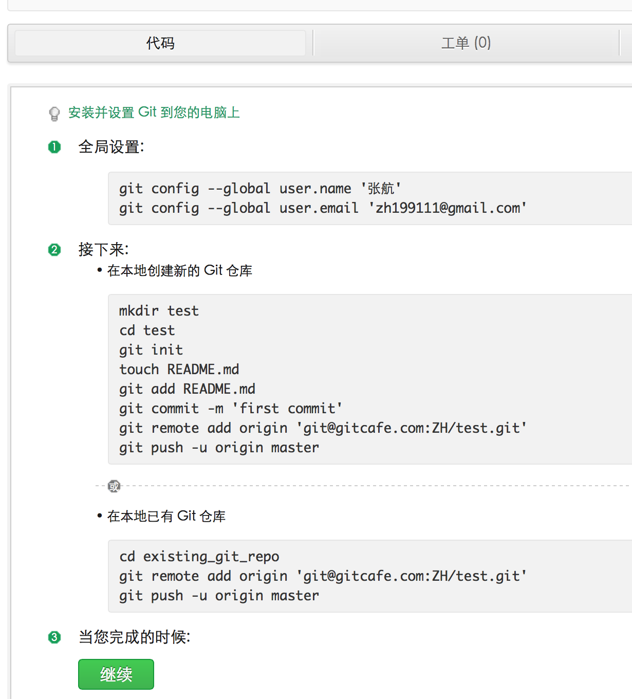
协同与多分支
在多人协作的项目中，每位成员都可以某一版本的项目为基础创建自己的分支，进行独立的提交而不与其他组员形成文件冲突，在该分支内容完成，成员将分支内容合并至主干（master 分支)。默认情况下，Git 会创建一个默认分支名为 master，我们之前的提交工作都是在 master 之下进行的。
下面展示了分支的常用命令：
创建与切换分支
git branch new-branch-name // 创建分支 new-branch-name git branch checkout new-branch-name // 切换到 new-branch-name 分支 git branch -v //项目查看分支提交分支
git push -u origin new-branch-name合并与删除分支
git merge new-branch-name// 将 new-branch-name 的变更融合到当前分支 git branch -d new-branch-name //删除 new-branch-name 分支
实战
这次实战以 git_test 项目为基础进行，展示创建分支、在分支之上提交、融合分支、解决冲突以及删除分支。
首先看一下目前 git_test 的文件结构
git_test/
- README.md
我们将创建两个分支 todolist-a 以及 todolist-b，分别创建自己的 todolist 文件，并共同修改 README.md 文件，最终将两个分支的修改合并到主干。最终文件结构将变为
git_test/
- README.md (被两方修改)
- todolista.md （由 todolist-a 分支创建并融合）
- todolistb.md （由 todolist-b 分支创建并融合）
分支 todolist-a
使用 branch 命令创建并切换到 todolist-a 分支
git branch todolist-a
git checkout todolist-a
运行 git branch -v 查看分支状态
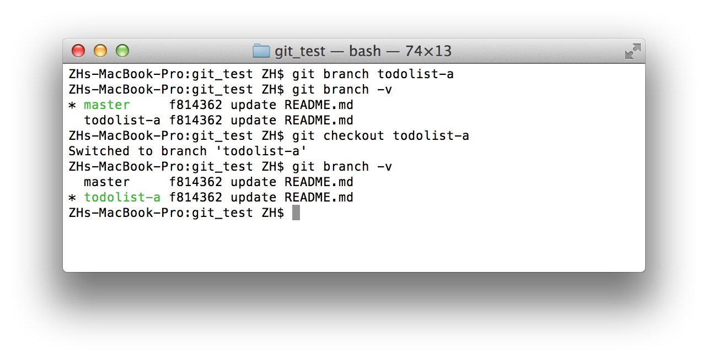
此时 todolist-a 分支中的文件结构和 master 主分支的相同
git_test/
- README.md
创建 todolista.md 文件并提交
touch todolista.md //创建一个空的 todolista.md 文件
git add todolista.md //将 todolista.md 纳入暂存区
git commit -m "add todolista.md"//提交
此时 todolist-a 分支下文件结构变为
git_test/
- README.md
- todolista.md
master 分支仍为
git_test/
- README.md
接下来在 README.md 中添加一行 todolist-a 并提交
echo "todolist-a" >> README.md
git add README.md
git commit -m "add a line in README.md"
分支 todolist-b
下面切换回 master 分支，创建并切换到 todolist-b 分支
git checkout master
git branch todolist-b
git checkout todolist-b
现在，用 git branch -v 验证一下，我们处于 todolist-b 分支之上
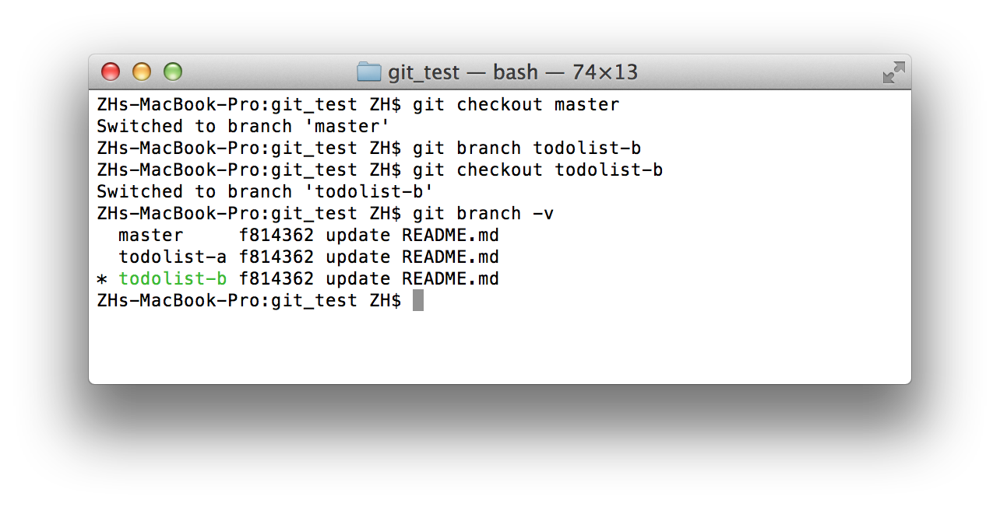
因为是基于 master 创建的分支，所以 todolist-b 分支的文件结构与 master 相同，为
git_test/
- README.md
接下来创建 todolistb.md 文件并在 README.md 中加入 todolist-b，并进行提交。
echo "todolist-b" >> README.md
touch todolistb.md
git add -A //添加所有变更文件到暂存区
git commit -m "add a line in README.md & add todolistb.md"
合并
在 Git 中，我们使用 merge branch-name 命令，将特定分支融合到当前分支当中。
在当前项目中，我们有三个分支
master
git_test/ - README.mdtodolist-a
git_test/ - README.md (加了一行 "todolist-a") - todolista.mdtodolist-b
git_test/ - README.md (加了一行 "todolist-a") - todolistb.md首先切换到 master，并融合 todolist-a 分支
git checkout master
git merge todolist-a
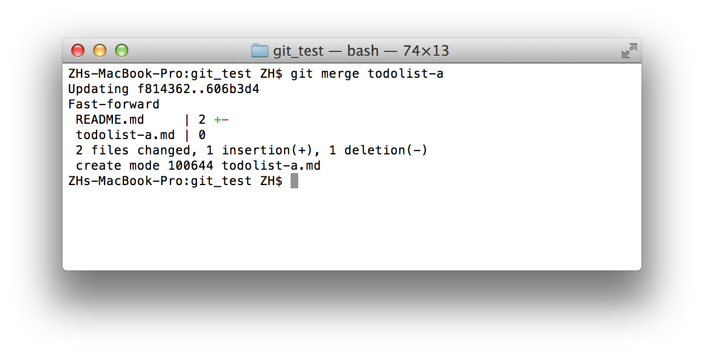
这时三个分支结构变为了
master
git_test/ - README.md (todolist-a 版本的 README.md) - todolista.mdtodolist-a
git_test/ - README.md (加了一行 "todolist-a") - todolista.mdtodolist-b
git_test/ - README.md (加了一行 "todolist-a") - todolistb.md接下来融合 todolist-b 分支
git merge todolist-b
这时因为 todolist-a todolist-b 都修改了 README.md 文件，合并造成了冲突

这时候打开 README.md 查看会发现文件内容变为了
<<<<<<< HEAD
todolist-a
=======
todolist-b
>>>>>>> todolist-b
<<<<<<<< HEAD和=======之间的内容为当前分支的内容，>>>>>>> todolist-b和=======之间的为 todolist-b 的内容，这时就需要手动解决文件冲突，将文件修改为
todolist-a
todolist-b
并提交
git add README.md
git commit -m "fixup"
这时三个分支结构变为了
master
git_test/ - README.md (解决冲突后的版本，包含两个分支的内容) - todolista.md - todolistb.mdtodolist-a
git_test/ - README.md (加了一行 "todolist-a") - todolista.mdtodolist-b
git_test/ - README.md (加了一行 "todolist-a") - todolistb.md
至此，多分支开发合并的工作就做完了。作为好习惯，我们经常在合并完某一分支后将它删除，接下来运行
git branch -d todolist-a
git branch -d todolist-b
删除它们。
当您希望其他成员协助您的项目时，可以将其加为项目协作人员，项目协作人员具有向您的项目推送新的提交的权限。
- 打开项目主页
- 点击右上角的"项目管理"按钮
- 点击项目协作人员，通过昵称添加协作人员。
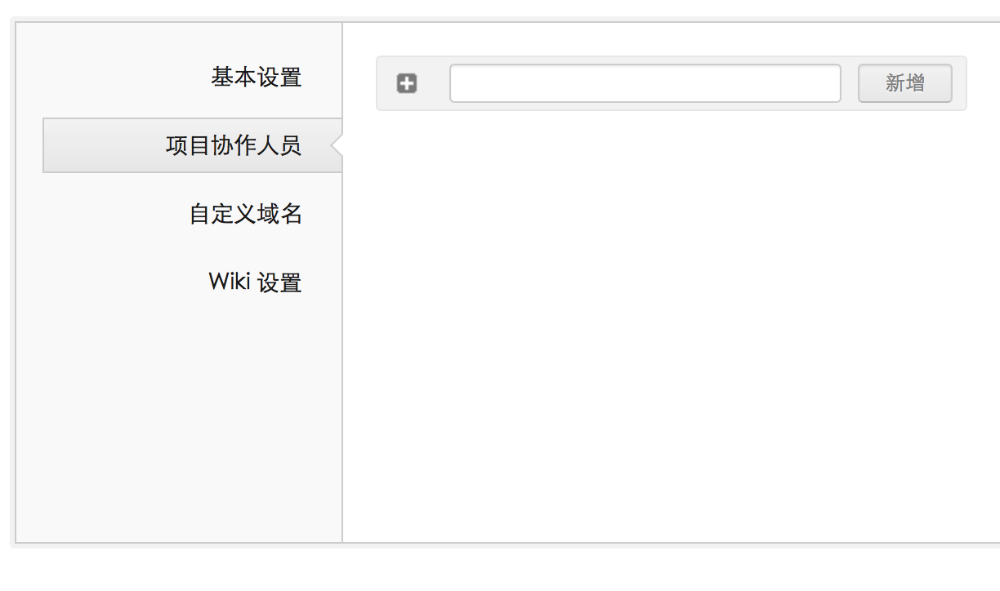
Git Game
Git Game 是一个群体游戏，用来引导并测试第一次学习 Git 的团队，是否掌握了最基础的 Git 指令操作。
规则
- 3 ~ 10 个人组成团队，且均注册 GitCafe 账号。
- 选出管理员在 GitCafe 中创建已团队名为名称的组织，创建 GitGame 项目，并将所有组员加为该项目的协同人员。
- 管理员在本地创建 GitGame 项目文件夹，在该文件夹的根目录中有一个空白的文本，“ParticipantList.txt”。
- 团队一员按码表开始计时。
- 团队所有成员将 GitGame 项目 clone 到本地，在 “ParticipantList.txt” 中按照
姓名 电话 GitCafe昵称 GitCafe注册邮件加入个人信息并上传 （push） 到 GitCafe 上。
提示
当多人修改同一文件时，每位成员都需要独立使用 git pull git checkout 命令化解文件冲突，在保留其他人的个人信息的基础上加入自己的信息。
当所有成员的个人信息都被添加入 ”ParticipantList.txt” 后，即使停止。由裁判检验从第一个成员到最后一个成员完成加个人信息的总时间。总时间最短的团队获胜。 ```
深入学习
若您希望深入学习 Git 可以参考以下资料
- 《Git 权威指南》 - 蒋鑫
- 《Pro Git》 － Scoott Chacon
- Git 官方网站 http://git-scm.com